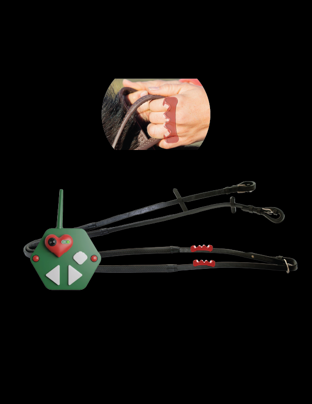

Design for Accessibility
-
An AI agent with a lightweight interface and backend layer to optimize LLM short-term memory during document creation, reducing token usage and computational cost while optimizing content quality and increasing user cognitive engagement. (2025)
Can accessible design be the key to greener, more responsible generative AI? The use of Large Language Models (LLMs) in productivity has surged in recent years, and they are mostly found in the form of chat-based interfaces. But what happens when we design for cognitive accessibility beyond chatbots? What happens when we go beyond the with WCAG guidelines, ensuring usability and building strategic "working memories" and strategic data visualizations to catalyze task completion? Computational efficiency and energy savings seem one collateral benefit we might find along the way.

-

Can haptic devices, or devices that make use of tactile cues, help us improve horse-riding therapy lessons for nonverbal kids in the spectrum? (2024)
A set of digital reins with hand warmers seems to help nonverbal kids with autism during their therapy horse riding lessons.